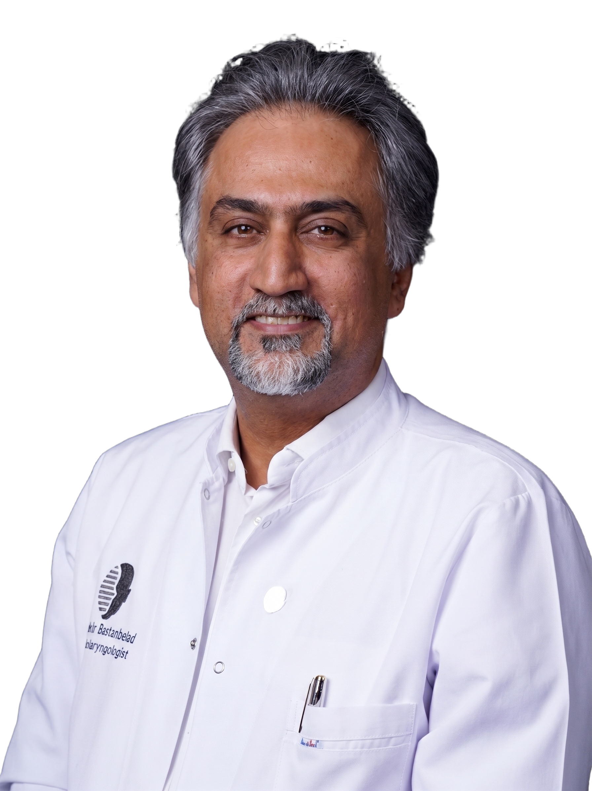
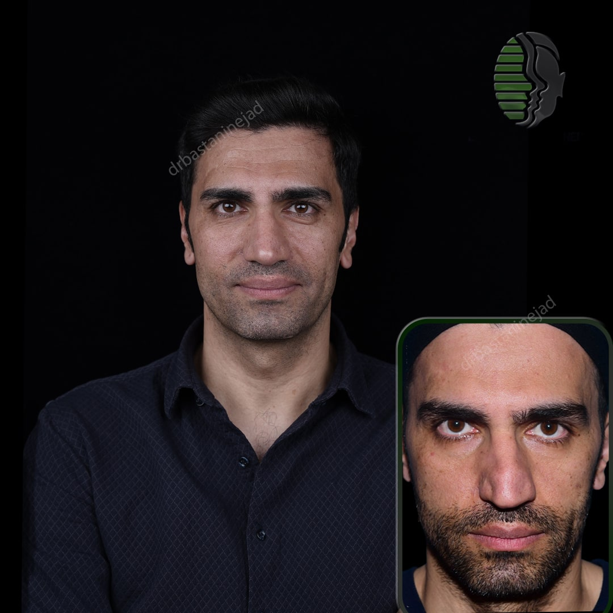

.webp)
.webp)
.webp)
.webp)
.webp)
.webp)
مشاوره تخصصی
ارزیابی دقیق آناتومی بینی، بررسی انتظارات بیمار و تعیین اهداف قابل دستیابی.
دکتر شاهین باستانینژاد — جراح و متخصص گوش، گلو و بینی، عضو هیئت علمی دانشگاه علوم پزشکی تهران و دبیر کمیته علمی رینولوژی انجمن جراحی پلاستیک بینی ایران.
.webp)
از جراحی اولیه تا ترمیمی پیچیده — هر عمل با رعایت کامل استانداردهای ایمنی و زیباییشناسی انجام میشود.
اصلاح فرم، اندازه و تناسب بینی با چهره برای اولین بار — رویکرد محافظهکارانه و طبیعی.
بیشتر بدانیداصلاح نواقص جراحی قبلی — پیچیدهترین نوع رینوپلاستی با نیاز به تخصص بالاتر.
بیشتر بدانیداصلاح قوز، ساختار سخت و برجستگی پل بینی با حفظ طبیعی بودن نتیجه.
بیشتر بدانیدپوست ضخیم — چالشبرانگیزترین نوع رینوپلاستی که نیازمند تکنیک خاص است.
بیشتر بدانیدنتیجه هماهنگ با چهره، بدون ظاهر «عملکرده» — هدف اصلی جراح.
بیشتر بدانیدطرحهای شخصیسازیشده با نوک خاص، متفاوت از سبک کلاسیک.
بیشتر بدانیدحذف برجستگی پل بینی — یکی از رایجترین درخواستها در رینوپلاستی.
بیشتر بدانیدبهبود تنفس، رفع خروپف و اصلاح انحراف تیغه بینی.
بیشتر بدانیدکاهش التهاب شاخک بینی برای تنفس راحتتر و درمان گرفتگی مزمن.
بیشتر بدانیددرمان سینوزیت مزمن، پولیپ بینی و بیماریهای قاعده جمجمه با آندوسکوپ.
بیشتر بدانید
دکتر شاهین باستانینژاد، متخصص گوش، گلو و بینی و عضو هیئت علمی دانشگاه علوم پزشکی تهران، فارغالتحصیل دانشگاه اصفهان (۱۳۷۵) و دستیار تخصصی دانشگاه تهران (۱۳۸۴–۱۳۸۸) است. ایشان در آزمون بورد تخصصی رتبه چهارم کشوری را کسب نموده و دبیر کمیته علمی رینولوژی انجمن جراحی پلاستیک بینی ایران میباشند.
هدف ما دستیابی به زیبایی طبیعی و همزمان حفظ کامل عملکرد تنفسی بینی است. هر بیمار با آناتومی منحصر به فردش مورد ارزیابی قرار میگیرد و طرح جراحی اختصاصی برای او تدوین میشود.بیشتر بدانید
تمامی تصاویر با رضایت کامل بیماران منتشر شده است.
از مشاوره اولیه تا پیگیریهای پس از عمل — همراه شما در تمام مراحل.
ارزیابی دقیق آناتومی بینی، بررسی انتظارات بیمار و تعیین اهداف قابل دستیابی.
انجام آزمایشات لازم، مشاورههای پیش از جراحی و آمادهسازی کامل بیمار.
انجام جراحی در محیط بیمارستانی با رعایت کامل پروتکلهای ایمنی و بهداشتی.
پیگیریهای منظم پس از عمل، برداشتن آتل و مشاورههای لازم برای بهترین نتیجه.
راهنمای کامل جراحی بینی — از آمادگی تا مراقبتهای پس از عمل.

جراحی بینی ترمیمی برای اصلاح نواقص باقیمانده از عمل قبلی — از قوز مجدد تا مشکلات تنفسی — انجام میشود.
ادامه مطلب
بینی گوشتی با پوست ضخیم چالشبرانگیزترین نوع رینوپلاستی است — روش جراحی و نتایج را بخوانید.
ادامه مطلب
اقدامات قبل جراحی بینی که نیاز است بیماران همه آنها را رعایت کنند.
ادامه مطلبآخرین نمونه کارها، ویدئوهای آموزشی و اخبار کلینیک را در اینستاگرام دنبال کنید.
فرم پرونده اولیه کمتر از ۲ دقیقه طول میکشد — بدون نیاز به حضور یا پیشپرداخت.
.webp)
.webp)
.webp)
.webp)
.webp)
.webp)